wmtask_direct_sum_additive_p30_perareafnnautodim_nearid_tf__lc_x_obsnoisescale_sweep_20260429T234503Z__stage_bProject: WMTask_identity_encoder_verification
Launched: 2026-04-30T03:00:23Z
Completed: 2026-04-30T03:25:44Z
Outcome: complete_with_failures
Git: latent-JacobianODE @ 4cd9047
Expected runs: 10
wmtask_direct_sum_additive_p30_perareafnnautodim_nearid_tf__lc_x_obsnoisescale_sweepDescription
WMTask fully-observed (N1=N2=64), latent JacobianODE with DirectSumCouplingEncoder, FNN-based per-area autodim (n_target_dim_method='fnn', threshold=0.01). Each area independently picks its own n_target_dims via Kennel false-nearest-neighbor on its own input dims; remaining dims become a per-area null subspace. Additive coupling, 8 layers, hidden_dim=128. near_identity_std=1e-3, final_perm_identity=true. 21-cell sweep over 7 LC x 3 obs_noise_scale. Split-mode loss. TF-coupled LR schedule. Two-stage protocol with dual-checkpoint (primary ES patience=5, shadow patience=2).
Hypothesis
Companion to the full-128 DirectSum sweep with the same TF-coupled LR + near-id init recipe. The per-area null subspace gives loop closure something structural to clamp (vs full-128 where z_dyn is the entire latent and null is empty), and the FNN dim estimator should pick a smaller per-area n_target_dims than the PCA-99% baseline (FNN finds the minimum embedding dim for stable reconstruction; PCA finds dims to explain a variance fraction). If the smaller dim helps dynamics learning AND the null subspace + LC pressure is doing useful regularization, this should match or beat full-128 on val traj_loss while preserving cross-area Gramian asymmetry.
Success criteria
Swept axes (3): training.ckpt_path, training.lightning.loop_closure_weight, training.lightning.obs_noise_scale
Chosen run (by best_traj_loss): elowvka3 — traj_loss=0.05036, MASE=1.5639, R²=0.9426, LC loss=59.664, epoch=24.0
Swept-axis values at chosen run: training.ckpt_path=/orcd/data/ekmiller/001/eisenaj/JacobianODE/sweeps/two_stage_ckpts/wmtask_direct_sum_additive_p30_perareafnnautodim_nearid_tf__lc_x_obsnoisescale_sweep_20260429T234503Z__stage_a/f9a20657e9f3ccd2/last.ckpt · training.lightning.loop_closure_weight=1.0e-06 · training.lightning.obs_noise_scale=0
Runs analyzed: 10 (expected 10)
| run_idx | run_id | training.ckpt_path |
training.lightning.loop_closure_weight |
training.lightning.obs_noise_scale |
best_traj_loss | best_MASE | R² | LC loss | epoch |
|---|---|---|---|---|---|---|---|---|---|
| 1 | elowvka3 |
/orcd/data/ekmiller/001/eisenaj/JacobianODE/sweeps/two_stage_ckpts/wmtask_direct_sum_additive_p30_perareafnnautodim_nearid_tf__lc_x_obsnoisescale_sweep_20260429T234503Z__stage_a/f9a20657e9f3ccd2/last.ckpt | 1.0e-06 | 0 | 0.05036 | 1.5639 | 0.9426 | 59.664 | 24.0 |
| 2 | onmoe29e |
/orcd/data/ekmiller/001/eisenaj/JacobianODE/sweeps/two_stage_ckpts/wmtask_direct_sum_additive_p30_perareafnnautodim_nearid_tf__lc_x_obsnoisescale_sweep_20260429T234503Z__stage_a/d7a3ea34a2d5401c/last.ckpt | 1.0e-05 | 0 | 0.05037 | 1.5649 | 0.9426 | 20.073 | 24.0 |
| 0 | tbcm1bkz |
/orcd/data/ekmiller/001/eisenaj/JacobianODE/sweeps/two_stage_ckpts/wmtask_direct_sum_additive_p30_perareafnnautodim_nearid_tf__lc_x_obsnoisescale_sweep_20260429T234503Z__stage_a/a08083641f8d8494/last.ckpt | 0 | 0 | 0.05044 | 1.5658 | 0.9425 | 111.461 | 24.0 |
| 3 | dr5k2juk |
/orcd/data/ekmiller/001/eisenaj/JacobianODE/sweeps/two_stage_ckpts/wmtask_direct_sum_additive_p30_perareafnnautodim_nearid_tf__lc_x_obsnoisescale_sweep_20260429T234503Z__stage_a/a4e7a36e10c4eac1/last.ckpt | 1.0e-04 | 0 | 0.05166 | 1.5981 | 0.9411 | 3.399 | 23.0 |
| 4 | dq7e95ur |
/orcd/data/ekmiller/001/eisenaj/JacobianODE/sweeps/two_stage_ckpts/wmtask_direct_sum_additive_p30_perareafnnautodim_nearid_tf__lc_x_obsnoisescale_sweep_20260429T234503Z__stage_a/94d54f219fa69833/last.ckpt | 0.001 | 0 | 0.05379 | 1.6572 | 0.9387 | 0.386 | 22.0 |
| 5 | wbpa8j1x |
/orcd/data/ekmiller/001/eisenaj/JacobianODE/sweeps/two_stage_ckpts/wmtask_direct_sum_additive_p30_perareafnnautodim_nearid_tf__lc_x_obsnoisescale_sweep_20260429T234503Z__stage_a/b2b02557d16c691e/last.ckpt | 0 | 0.05 | 0.05442 | 1.6774 | 0.9379 | 264.422 | 23.0 |
| 6 | dkex44fp |
/orcd/data/ekmiller/001/eisenaj/JacobianODE/sweeps/two_stage_ckpts/wmtask_direct_sum_additive_p30_perareafnnautodim_nearid_tf__lc_x_obsnoisescale_sweep_20260429T234503Z__stage_a/a0d0954aa2aebc4e/last.ckpt | 1.0e-06 | 0.01 | 0.05484 | 1.6892 | 0.9374 | 114.459 | 23.0 |
| 7 | 2b46y1bb |
/orcd/data/ekmiller/001/eisenaj/JacobianODE/sweeps/two_stage_ckpts/wmtask_direct_sum_additive_p30_perareafnnautodim_nearid_tf__lc_x_obsnoisescale_sweep_20260429T234503Z__stage_a/54426b7f2a8f1f3a/last.ckpt | 0 | 0.01 | 0.05487 | 1.6896 | 0.9374 | 232.893 | 23.0 |
| 8 | q124a7gl |
/orcd/data/ekmiller/001/eisenaj/JacobianODE/sweeps/two_stage_ckpts/wmtask_direct_sum_additive_p30_perareafnnautodim_nearid_tf__lc_x_obsnoisescale_sweep_20260429T234503Z__stage_a/a421f95ba66ac4b7/last.ckpt | 1.0e-05 | 0.01 | 0.05508 | 1.6979 | 0.9372 | 32.210 | 22.0 |
| 9 | tdce3jmn |
/orcd/data/ekmiller/001/eisenaj/JacobianODE/sweeps/two_stage_ckpts/wmtask_direct_sum_additive_p30_perareafnnautodim_nearid_tf__lc_x_obsnoisescale_sweep_20260429T234503Z__stage_a/536feb1e214ff933/last.ckpt | 1.0e-06 | 0.05 | 0.05508 | 1.6978 | 0.9372 | 121.749 | 22.0 |
obs_noise_scale| obs_noise_scale | Best LC weight | Best traj loss | MASE at best | R² | LC loss | epoch |
|---|---|---|---|---|---|---|
| 0.0 | 1.0e-06 | 0.05036 | 1.5639 | 0.9426 | 59.664 | 24.0 |
| 0.01 | 1.0e-06 | 0.05484 | 1.6892 | 0.9374 | 114.459 | 23.0 |
| 0.05 | 0.0e+00 | 0.05442 | 1.6774 | 0.9379 | 264.422 | 23.0 |
| Criterion | Verdict | Note |
|---|---|---|
| All 21 cells train without divergence | Unknown | |
| FNN auto-dim per area logged (n_target_dims_per_block_fnn_auto) | Unknown | |
| es2-best.ckpt and es5-best.ckpt both saved per cell | Unknown | |
| Best val traj_loss within 2x of full-128 DirectSum companion's best | Unknown | |
| Cross-area Gramian asymmetry consistent with ground truth at best cell | Unknown | |
| Loop closure loss at best cell < sqrt(n_target_dims) | Unknown |
Automated verdicts use simple numeric-threshold parsing and may mis-classify qualitative criteria. The Discussion section below takes precedence.
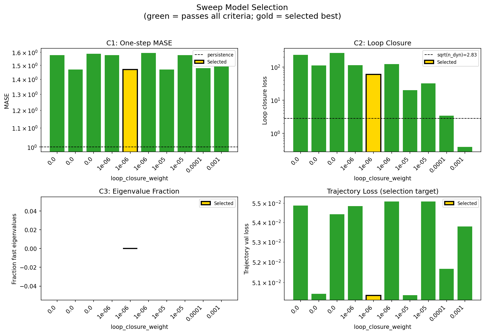
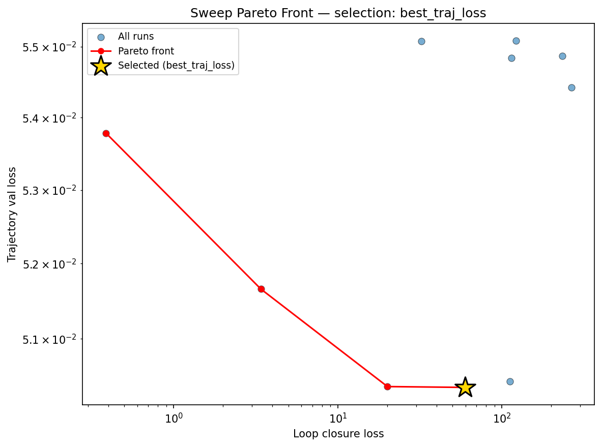
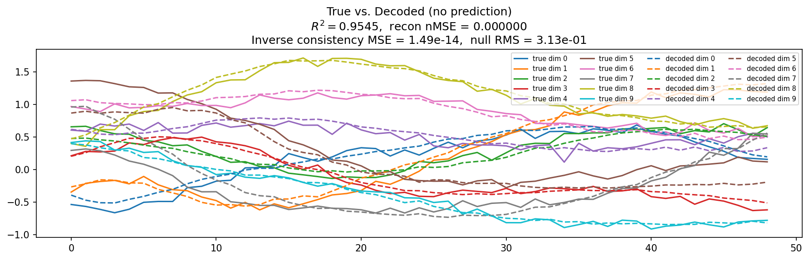
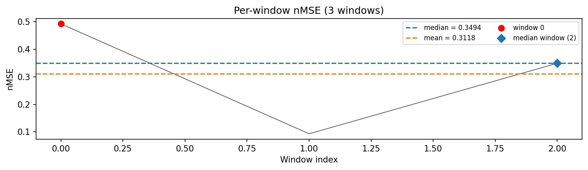
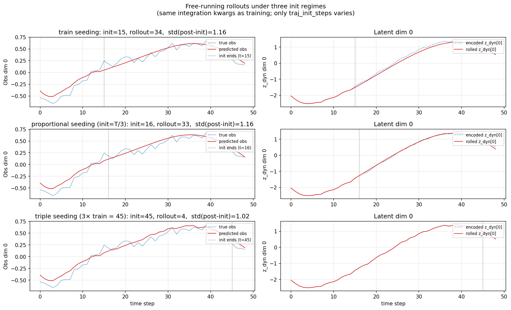
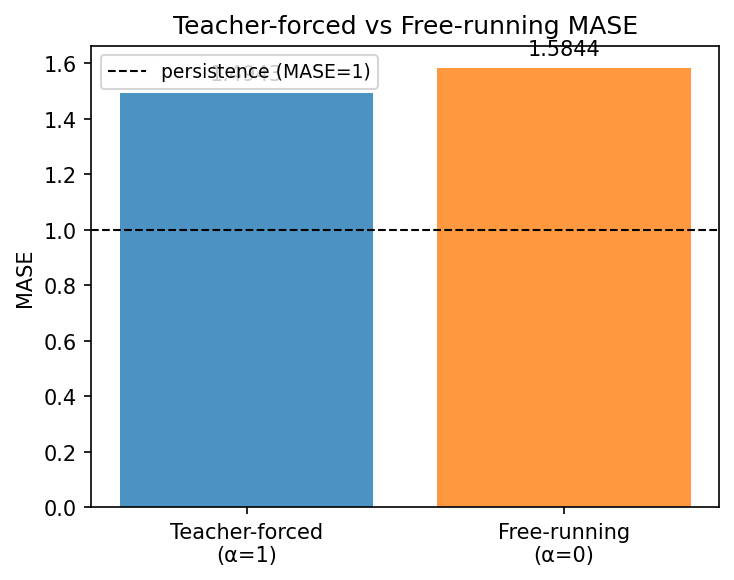
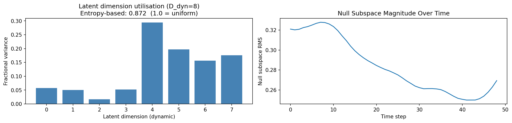
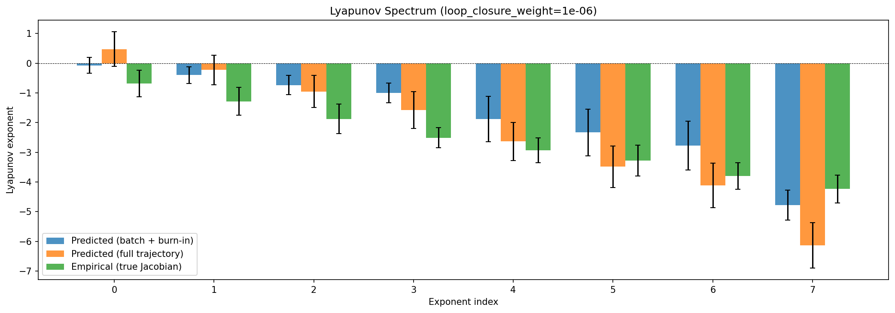
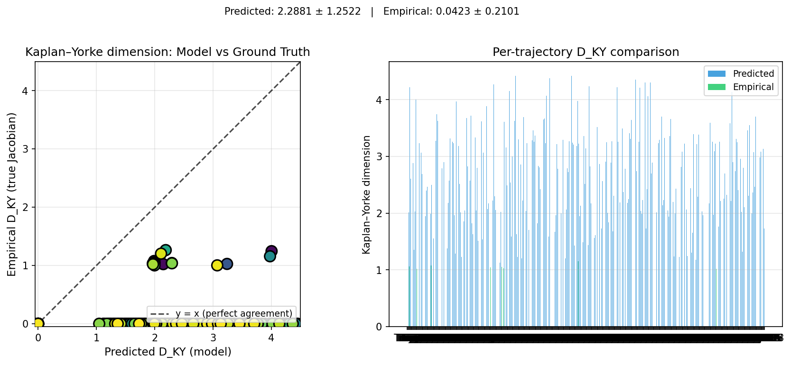
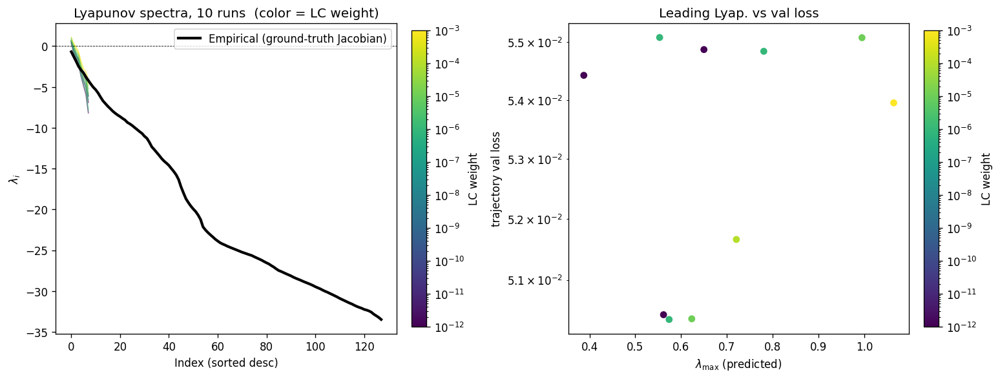
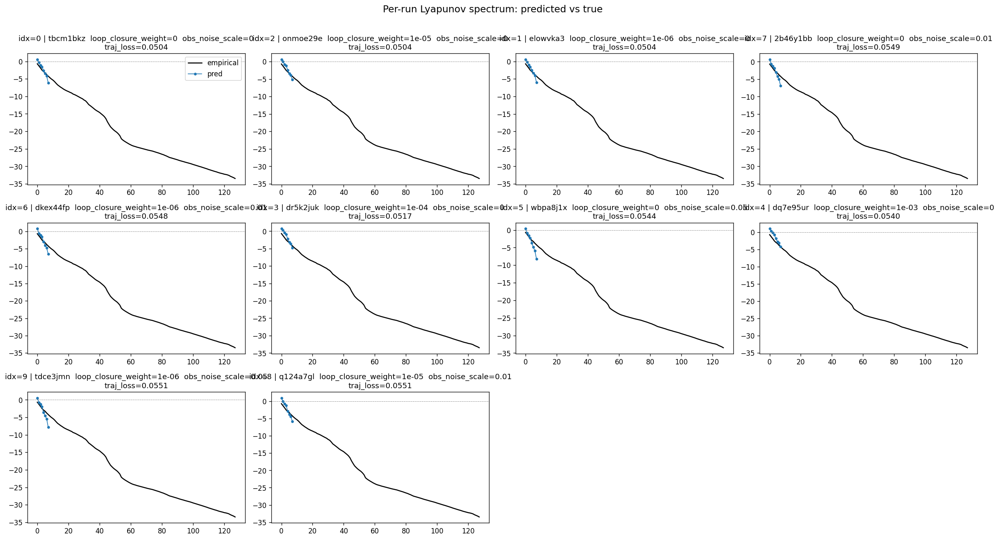
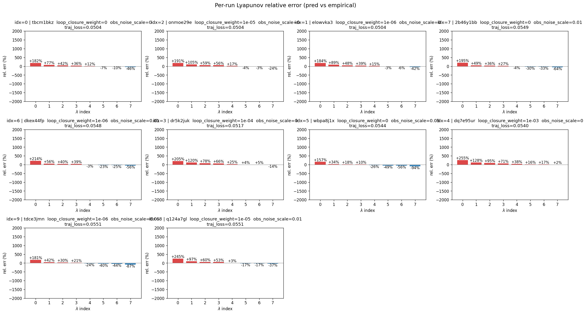
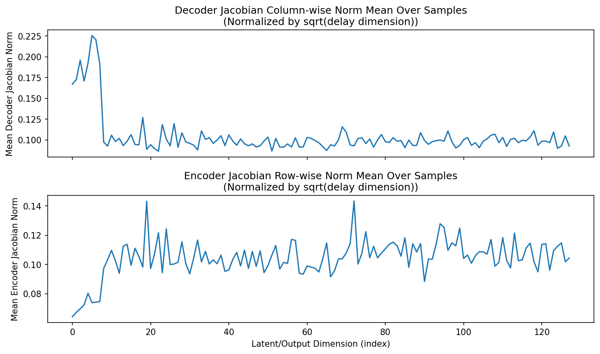
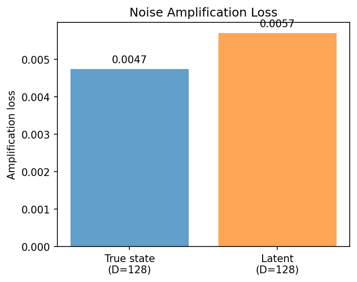
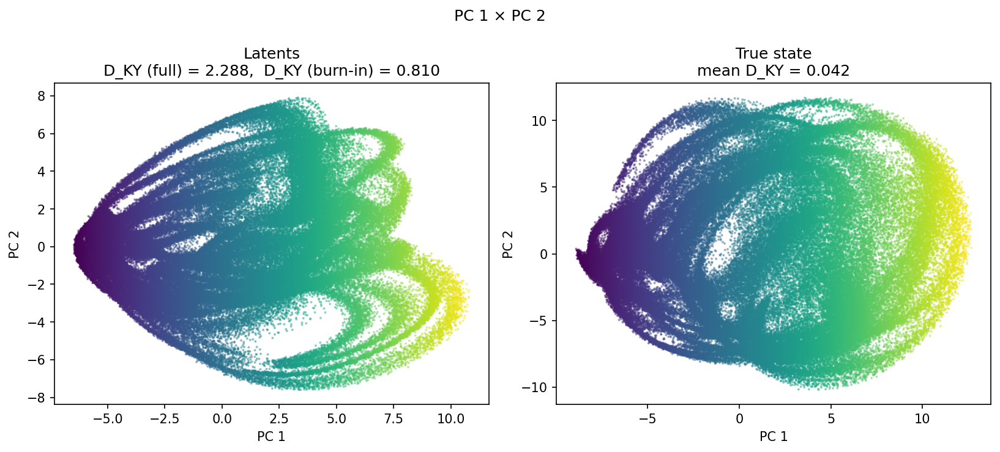
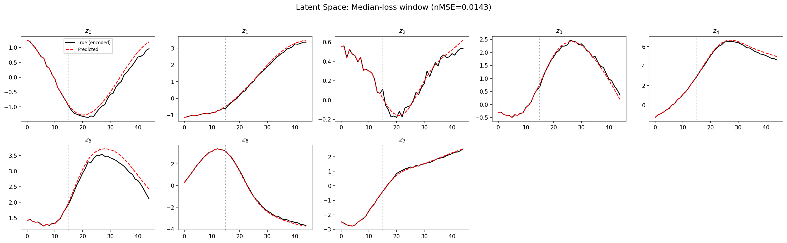
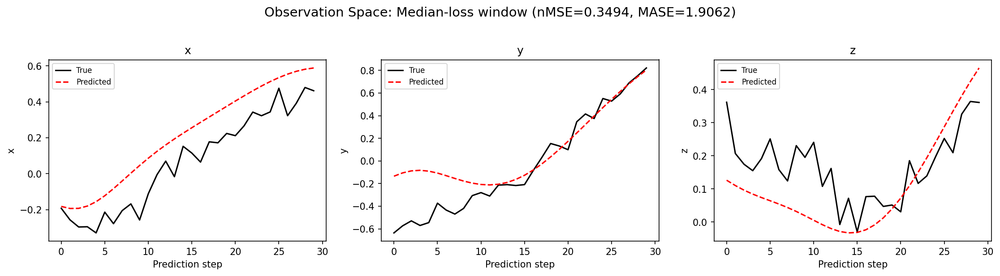
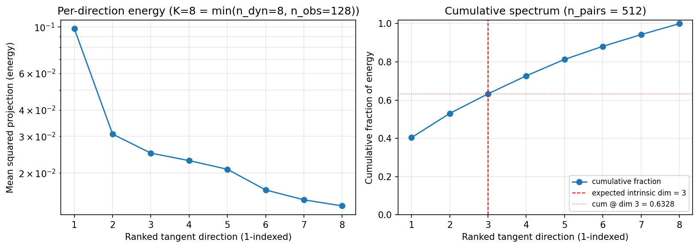
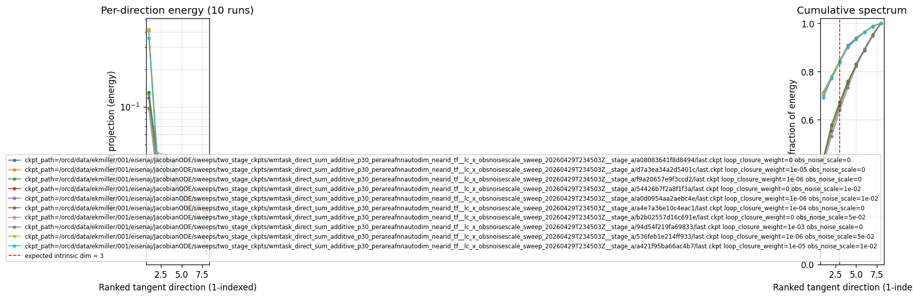
(to be written)
run_analytics stdoutrun_analyticsNo run_id provided — selecting best run from group 'wmtask_direct_sum_additive_p30_perareafnnautodim_nearid_tf__lc_x_obsnoisescale_sweep_20260429T234503Z__stage_b' ...
Found 10 total runs in JacobianODE/WMTask_identity_encoder_verification (group=wmtask_direct_sum_additive_p30_perareafnnautodim_nearid_tf__lc_x_obsnoisescale_sweep_20260429T234503Z__stage_b)
All runs (state, loop_closure_weight, tangent_entropy_weight, kl_dyn_weight):
tbcm1bkz: state=running, lc=0.0, te=0.0, kl_dyn=0.0
onmoe29e: state=running, lc=1e-05, te=0.0, kl_dyn=0.0
elowvka3: state=running, lc=1e-06, te=0.0, kl_dyn=0.0
2b46y1bb: state=running, lc=0.0, te=0.0, kl_dyn=0.0
dkex44fp: state=running, lc=1e-06, te=0.0, kl_dyn=0.0
dr5k2juk: state=running, lc=0.0001, te=0.0, kl_dyn=0.0
wbpa8j1x: state=running, lc=0.0, te=0.0, kl_dyn=0.0
dq7e95ur: state=running, lc=0.001, te=0.0, kl_dyn=0.0
tdce3jmn: state=running, lc=1e-06, te=0.0, kl_dyn=0.0
q124a7gl: state=running, lc=1e-05, te=0.0, kl_dyn=0.0
slurm_timeout_min not found in any run config — falling back to 180 min
Including tbcm1bkz (lc=0.0): use_all_runs=True (state=running)
Including onmoe29e (lc=1e-05): use_all_runs=True (state=running)
Including elowvka3 (lc=1e-06): use_all_runs=True (state=running)
Including 2b46y1bb (lc=0.0): use_all_runs=True (state=running)
Including dkex44fp (lc=1e-06): use_all_runs=True (state=running)
Including dr5k2juk (lc=0.0001): use_all_runs=True (state=running)
Including wbpa8j1x (lc=0.0): use_all_runs=True (state=running)
Including dq7e95ur (lc=0.001): use_all_runs=True (state=running)
Including tdce3jmn (lc=1e-06): use_all_runs=True (state=running)
Including q124a7gl (lc=1e-05): use_all_runs=True (state=running)
Found 10 effectively-done sweep runs:
loop_closure_weight=0.0, tangent_entropy_weight=0.0, kl_dyn_weight=0.0 -> run_id=2b46y1bb
loop_closure_weight=0.0, tangent_entropy_weight=0.0, kl_dyn_weight=0.0 -> run_id=tbcm1bkz
loop_closure_weight=0.0, tangent_entropy_weight=0.0, kl_dyn_weight=0.0 -> run_id=wbpa8j1x
loop_closure_weight=1e-06, tangent_entropy_weight=0.0, kl_dyn_weight=0.0 -> run_id=dkex44fp
loop_closure_weight=1e-06, tangent_entropy_weight=0.0, kl_dyn_weight=0.0 -> run_id=elowvka3
loop_closure_weight=1e-06, tangent_entropy_weight=0.0, kl_dyn_weight=0.0 -> run_id=tdce3jmn
loop_closure_weight=1e-05, tangent_entropy_weight=0.0, kl_dyn_weight=0.0 -> run_id=onmoe29e
loop_closure_weight=1e-05, tangent_entropy_weight=0.0, kl_dyn_weight=0.0 -> run_id=q124a7gl
loop_closure_weight=0.0001, tangent_entropy_weight=0.0, kl_dyn_weight=0.0 -> run_id=dr5k2juk
loop_closure_weight=0.001, tangent_entropy_weight=0.0, kl_dyn_weight=0.0 -> run_id=dq7e95ur
loaded wmtask RNN model checkpoint 41
Loading cached wmtask hiddens from /orcd/data/ekmiller/001/eisenaj/ControlJacobians/WMTaskModels/WMSelectionTask__cue_time_0.1__response_time_0.25__enforce_fixation_False/BiologicalRNN__cue_time_0.1__learning_rate_0.0005__max_epochs_42__N1_64__N2_64__tau_0.05__dt_0.02__eig_lower_bound_0.1__init_mode_random/_jacobianode_cache/hiddens__all__epoch41__trials4096__seed42.pt
n_dims=128, n_latent=128, n_dyn=8, dt=0.0200
run=2b46y1bb: DiagnosticMetrics(one_step_mase=1.577756643295288, loop_closure_loss=232.8925323486328, fast_eigenvalue_fraction=0.0, trajectory_val_loss=0.054871730506420135) (from W&B history)
run=tbcm1bkz: DiagnosticMetrics(one_step_mase=1.469096302986145, loop_closure_loss=111.46107482910156, fast_eigenvalue_fraction=0.0, trajectory_val_loss=0.05043913051486015) (from W&B history)
run=wbpa8j1x: DiagnosticMetrics(one_step_mase=1.5869005918502808, loop_closure_loss=264.4222412109375, fast_eigenvalue_fraction=0.0, trajectory_val_loss=0.054424628615379333) (from W&B history)
run=dkex44fp: DiagnosticMetrics(one_step_mase=1.5778098106384277, loop_closure_loss=114.45892333984375, fast_eigenvalue_fraction=0.0, trajectory_val_loss=0.05484176054596901) (from W&B history)
run=elowvka3: DiagnosticMetrics(one_step_mase=1.4690474271774292, loop_closure_loss=59.664207458496094, fast_eigenvalue_fraction=0.0, trajectory_val_loss=0.05036250129342079) (from W&B history)
run=tdce3jmn: DiagnosticMetrics(one_step_mase=1.5935086011886597, loop_closure_loss=121.74895477294922, fast_eigenvalue_fraction=0.0, trajectory_val_loss=0.05508299171924591) (from W&B history)
run=onmoe29e: DiagnosticMetrics(one_step_mase=1.4684423208236694, loop_closure_loss=20.072874069213867, fast_eigenvalue_fraction=0.0, trajectory_val_loss=0.05037321150302887) (from W&B history)
run=q124a7gl: DiagnosticMetrics(one_step_mase=1.5774716138839722, loop_closure_loss=32.209632873535156, fast_eigenvalue_fraction=0.0, trajectory_val_loss=0.05507883429527283) (from W&B history)
run=dr5k2juk: DiagnosticMetrics(one_step_mase=1.4788508415222168, loop_closure_loss=3.3991730213165283, fast_eigenvalue_fraction=0.0, trajectory_val_loss=0.05165942758321762) (from W&B history)
run=dq7e95ur: DiagnosticMetrics(one_step_mase=1.4911553859710693, loop_closure_loss=0.3862934410572052, fast_eigenvalue_fraction=0.0, trajectory_val_loss=0.05378584563732147) (from W&B history)
Ranking method: best_traj_loss
Best run ID: elowvka3
Best loop_closure_weight: 1e-06
Best tangent_entropy_weight: 0.0
Best kl_dyn_weight: 0.0
Best traj loss: 0.050363
Criteria applied: ['C3']
Surviving: 10 / 10
Auto-selected run_id: elowvka3
======================================================================
PARETO FRONTIER RUNS (4 runs)
======================================================================
Run ID LC Loss Traj Val Loss
------------ -------------- --------------
dq7e95ur 0.386293 0.053786
dr5k2juk 3.399173 0.051659
onmoe29e 20.072874 0.050373
elowvka3 59.664207 0.050363 <-- selected
======================================================================
RANKING METHOD COMPARISON (over 10 survivors)
======================================================================
Method Run ID LC Loss Traj Val Loss
---------------------- ------------ -------------- --------------
best_traj_loss elowvka3 59.664207 0.050363 <-- active
pareto_knee onmoe29e 20.072874 0.050373
geo_rank elowvka3 59.664207 0.050363
minimax_rank onmoe29e 20.072874 0.050373
geo_log_score elowvka3 59.664207 0.050363
minimax_log_score dr5k2juk 3.399173 0.051659
======================================================================
Loading run elowvka3 from JacobianODE/WMTask_identity_encoder_verification ...
loaded wmtask RNN model checkpoint 41
Loading cached wmtask hiddens from /orcd/data/ekmiller/001/eisenaj/ControlJacobians/WMTaskModels/WMSelectionTask__cue_time_0.1__response_time_0.25__enforce_fixation_False/BiologicalRNN__cue_time_0.1__learning_rate_0.0005__max_epochs_42__N1_64__N2_64__tau_0.05__dt_0.02__eig_lower_bound_0.1__init_mode_random/_jacobianode_cache/hiddens__all__epoch41__trials4096__seed42.pt
Loading checkpoint epoch=24-step=3125.ckpt...
Train dataset shape: torch.Size([11468, 45, 128])
Validation dataset shape: torch.Size([3280, 45, 128])
Test dataset shape: torch.Size([1636, 45, 128])
Train trajectories dataset shape: torch.Size([2867, 49, 128])
Validation trajectories dataset shape: torch.Size([820, 49, 128])
Test trajectories dataset shape: torch.Size([409, 49, 128])
Loading checkpoint epoch=24-step=3125.ckpt...
Computing reconstruction ...
Computing MASE ...
Teacher-forced MASE: 1.4943
Free-running MASE: 1.5844
Computing latent utilization ...
Entropy-based utilization: 0.872
Null subspace mean RMS: 2.851929e-01
Computing Lyapunov exponents ...
Computing full-trajectory Lyapunov (409 test trajs, T=49) ...
Predicted Lyapunov exponents (batch+burn-in, 128 windowed trajs):
λ_1 = -0.0723 ± 0.2664
λ_2 = -0.4007 ± 0.2789
λ_3 = -0.7387 ± 0.3274
λ_4 = -1.0027 ± 0.3302
λ_5 = -1.8833 ± 0.7646
λ_6 = -2.3346 ± 0.7865
λ_7 = -2.7795 ± 0.8204
λ_8 = -4.7788 ± 0.5052
Predicted Lyapunov exponents (full-length, 409 test trajs):
λ_1 = +0.4726 ± 0.5859
λ_2 = -0.2276 ± 0.4997
λ_3 = -0.9517 ± 0.5419
λ_4 = -1.5779 ± 0.6235
λ_5 = -2.6341 ± 0.6392
λ_6 = -3.4860 ± 0.6957
λ_7 = -4.1186 ± 0.7487
λ_8 = -6.1258 ± 0.7639
Empirical Lyapunov exponents (mean ± std):
λ_1 = -0.6836 ± 0.4470
λ_2 = -1.2860 ± 0.4717
λ_3 = -1.8796 ± 0.4983
λ_4 = -2.5140 ± 0.3383
λ_5 = -2.9329 ± 0.4143
λ_6 = -3.2778 ± 0.5212
λ_7 = -3.7948 ± 0.4446
λ_8 = -4.2351 ± 0.4668
λ_9 = -4.6672 ± 0.4583
λ_10 = -5.0458 ± 0.4531
λ_11 = -5.3534 ± 0.4185
λ_12 = -5.7506 ± 0.4346
λ_13 = -6.2355 ± 0.3491
λ_14 = -6.7043 ± 0.5036
λ_15 = -7.0414 ± 0.4554
λ_16 = -7.3719 ± 0.4648
λ_17 = -7.6725 ± 0.4415
λ_18 = -7.9667 ± 0.4130
λ_19 = -8.2155 ± 0.4290
λ_20 = -8.4474 ± 0.4083
λ_21 = -8.6400 ± 0.3667
λ_22 = -8.8546 ± 0.3395
λ_23 = -9.0471 ± 0.3366
λ_24 = -9.3642 ± 0.2863
λ_25 = -9.5403 ± 0.3009
λ_26 = -9.7473 ± 0.3189
λ_27 = -9.9780 ± 0.3514
λ_28 = -10.2177 ± 0.4331
λ_29 = -10.4760 ± 0.4197
λ_30 = -10.6968 ± 0.4504
λ_31 = -11.0538 ± 0.5425
λ_32 = -11.3182 ± 0.5459
λ_33 = -11.7806 ± 0.6071
λ_34 = -12.3300 ± 0.5244
λ_35 = -12.6464 ± 0.5369
λ_36 = -13.0198 ± 0.6314
λ_37 = -13.3795 ± 0.7073
λ_38 = -13.7502 ± 0.7660
λ_39 = -14.0682 ± 0.7579
λ_40 = -14.3279 ± 0.7619
λ_41 = -14.6206 ± 0.8778
λ_42 = -15.0213 ± 0.8116
λ_43 = -15.3487 ± 0.8488
λ_44 = -15.7679 ± 0.8512
λ_45 = -16.3535 ± 0.8105
λ_46 = -17.2371 ± 0.8420
λ_47 = -18.0172 ± 0.6551
λ_48 = -18.7348 ± 0.4352
λ_49 = -19.1920 ± 0.4388
λ_50 = -19.6032 ± 0.3862
λ_51 = -19.9849 ± 0.4171
λ_52 = -20.2854 ± 0.3677
λ_53 = -20.7129 ± 0.4088
λ_54 = -21.2293 ± 0.4493
λ_55 = -22.1518 ± 0.3711
λ_56 = -22.5100 ± 0.3571
λ_57 = -22.8264 ± 0.3133
λ_58 = -23.1069 ± 0.3495
λ_59 = -23.3589 ± 0.3337
λ_60 = -23.6276 ± 0.2926
λ_61 = -23.8603 ± 0.3155
λ_62 = -24.0618 ± 0.3005
λ_63 = -24.2152 ± 0.3129
λ_64 = -24.3396 ± 0.3136
λ_65 = -24.4895 ± 0.3210
λ_66 = -24.6115 ± 0.3197
λ_67 = -24.7359 ± 0.3269
λ_68 = -24.8561 ± 0.3392
λ_69 = -24.9753 ± 0.3426
λ_70 = -25.1117 ± 0.3497
λ_71 = -25.2226 ± 0.3734
λ_72 = -25.3357 ± 0.4009
λ_73 = -25.4353 ± 0.4172
λ_74 = -25.5439 ± 0.4046
λ_75 = -25.6332 ± 0.4116
λ_76 = -25.7832 ± 0.4585
λ_77 = -25.9142 ± 0.4799
λ_78 = -26.0449 ± 0.4990
λ_79 = -26.1810 ± 0.5037
λ_80 = -26.3617 ± 0.4899
λ_81 = -26.5171 ± 0.4864
λ_82 = -26.6628 ± 0.4753
λ_83 = -26.8617 ± 0.4795
λ_84 = -27.0282 ± 0.5036
λ_85 = -27.2607 ± 0.4846
λ_86 = -27.4529 ± 0.4854
λ_87 = -27.5733 ± 0.4725
λ_88 = -27.7187 ± 0.4967
λ_89 = -27.8617 ± 0.5003
λ_90 = -27.9895 ± 0.4903
λ_91 = -28.1274 ± 0.4923
λ_92 = -28.2824 ± 0.4913
λ_93 = -28.4072 ± 0.4914
λ_94 = -28.5255 ± 0.4695
λ_95 = -28.6477 ± 0.4521
λ_96 = -28.7842 ± 0.4453
λ_97 = -28.9001 ± 0.4403
λ_98 = -29.0308 ± 0.4330
λ_99 = -29.1511 ± 0.4295
λ_100 = -29.2954 ± 0.4247
λ_101 = -29.4503 ± 0.4217
λ_102 = -29.5753 ± 0.4321
λ_103 = -29.6956 ± 0.4539
λ_104 = -29.8547 ± 0.4485
λ_105 = -29.9992 ± 0.4490
λ_106 = -30.1172 ± 0.4378
λ_107 = -30.2615 ± 0.4426
λ_108 = -30.4062 ± 0.3980
λ_109 = -30.5554 ± 0.4003
λ_110 = -30.7032 ± 0.3985
λ_111 = -30.8743 ± 0.4228
λ_112 = -31.0109 ± 0.4336
λ_113 = -31.1492 ± 0.4292
λ_114 = -31.3023 ± 0.3981
λ_115 = -31.4396 ± 0.4097
λ_116 = -31.5685 ± 0.3902
λ_117 = -31.7302 ± 0.3526
λ_118 = -31.8705 ± 0.3050
λ_119 = -31.9948 ± 0.3040
λ_120 = -32.0998 ± 0.2813
λ_121 = -32.2401 ± 0.2718
λ_122 = -32.3221 ± 0.2617
λ_123 = -32.4282 ± 0.2531
λ_124 = -32.5858 ± 0.2272
λ_125 = -32.8296 ± 0.2629
λ_126 = -33.0206 ± 0.2244
λ_127 = -33.2132 ± 0.2160
λ_128 = -33.4614 ± 0.3541
Mean KY dim (predicted): 2.288 ± 1.252
Mean KY dim (empirical): 0.042 ± 0.210
Mean KY dim (burn-in): 0.810 ± 0.927
Computing prediction windows ...
Windows: 3 — nMSE min=0.0930, median=0.3494, mean=0.3118, max=0.4929
Computing long-trajectory free-running rollouts ...
Computing encoder/decoder Jacobians ...
encoder_jacobian: (128, 128, 128)
decoder_jacobian: (128, 128, 128)
Computing amplification loss ...
Amplification loss — True state: 0.004748
Amplification loss — Latent: 0.005709
Computing tangent space spectrum ...